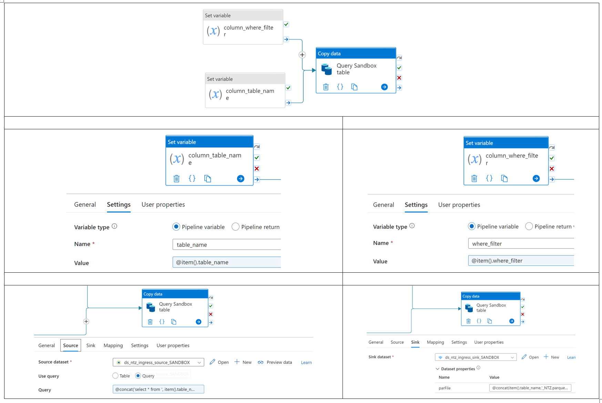

Using Key Vault Secrets in Azure Data Factory
Key Vault secrets can be used to securely manage connections to services such as NAS drives or Databricks.
NAS Drive Linked Service
- Create a Service Account with priviliges to access a NAS drive
- create a new secret in KV with the password of the above Service Account
- use the secret, and the Service Account user name, in ADF when configuring a linked service for NAS drive
- use the linked service in an ADF Copy data activity
Databricks Linked Service
- Generate a token in Databricks and take note of it
- create a new secret in KV with the above token
- use the secret in ADF when configuring a linked service for databricks
- use the linked service in an ADF Databricks notebook activity
Azure ARM
Deploy via Powershell
New-AzResourceGroup RG01 "South Central US"New-AzResourceGroupDeployment adds a deployment to an existing resource group. (https://learn.microsoft.com/en-us/powershell/module/az.resources/new-azresourcegroupdeployment?view=azps-9.3.0)
Useful Links
- https://samcogan.com/deploying-resource-groups-with-arm-templates/
Azure Fundamentals Exam (AZ-900)
Note about creating a Databricks Resource in Azure Portal
- When creating a Databricks resource, Databricks will itself create a separate resource group (RG) with a storage account. This RG cannot be deleted via the porta;. See here for more: https://stackoverflow.com/questions/60694149/unable-to-remove-azure-databricks-managed-resource-group
Data Ingress
Linked Services
Create a Linked Service to connect ADF to Databricks using Key Vault
Pre-requisites:
Parameterizing ADF
Pass a custom filename to Copy Activity Sink Dataset
Copy Activity: import an Excel to Blob Storage as Parquet file
Problem to solve: give the parquet file a custom name
Solution: add a parameter to the dataset of interest (source, sink or both depending on use case)
Explanation: when a copy activity source, or sink, uses a dataset that has a parameter, the parameter will appear in the source, or sink, Dataset properties. Here you can then specifiy a value, either as hard coded string or as yet another parameter, that will then be passed to the Dataset Connection tab where it is referenced and will be replaced by the value passed to it.
Steps:
* for the sink part (Blob Storage), you need a Parquet dataset with the required Linked Service to ADLS Gen2
* in the Dataset Parameters tab, add a parameter named sink_file (String)
* in the Dataset Connection tab, it is assumed the File Path boxes 1 and 2 are populated with the path to the blob storage container where the files will be saved. For File Path box 3, enter @dataset().sink_file
* in the Copy Activity, under Dataset Properties of the sink, enter the value you wish to pass to the sink dataset. THis can be a string or anotehr parameter e.g. a value captured from a Get Metadata activity, or from a Lookup activity.
Query Database Tables and Save as Parquet File to Blob Storage
The solution has two core components: A Lookup activity and a ForEach activity.
The Lookup activity
* the source dataset can be a CSV file on NAS drive. The columns in the file are table_name and where_filter. Each row represents one table to be queried by the ForEach loop.
The ForEach activity
* consists of two Set variable activities connected to a Copy Data activity.
* the Set variable activities reference the values for table name and for the where filter passed through by the Lookup activity. The syntax is shown in the screenshot below.
* the source of the Copy Data activity uses the following query: @concat('select * from ', item().table_name,' ', item().where_filter).
* in the sink of the Copy Data activity we pass a dynamic value to parameter parFile of the sink Parquet dataset: @concat(item().table_name,'_NTZ.parquet')

The dynamic filename passed to the Parquet dataset is shown below:

Create dynamic folder name for COPY activity (egress)
-
source ADLSGen2:
@concat('@concat('custom_dataset/shared_team_data/CG_BPT/BPT_CLIENT_EXCELS/', formatdatetime(utcnow(),'yyyy-MM-dd'))
-
sink NAS Drive:
@concat('Azure/CG/static_output_files/', formatDateTime(utcNow(),'yyyy'), '-' ,formatDateTime(utcNow(),'MM'), '-', formatDateTime(utcNow(),'dd'))